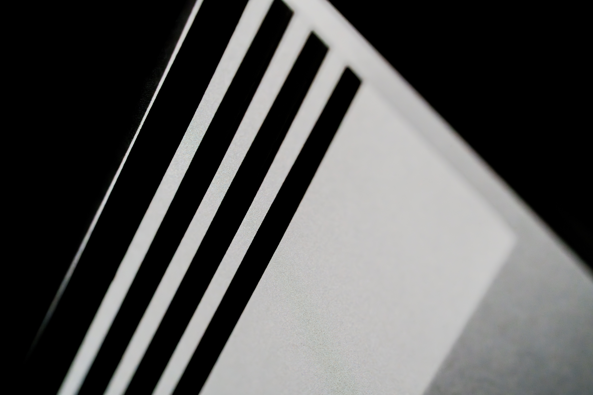
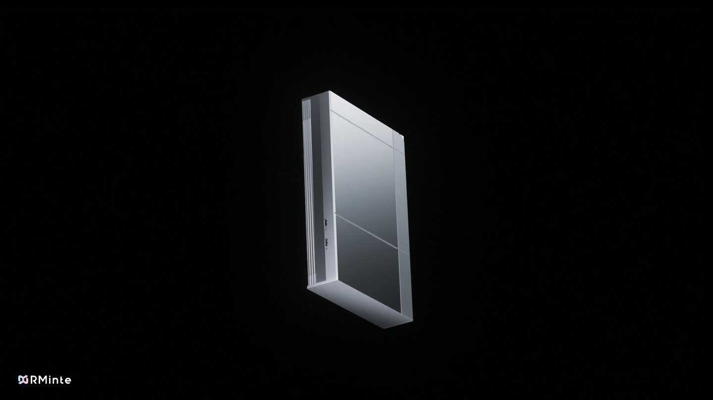
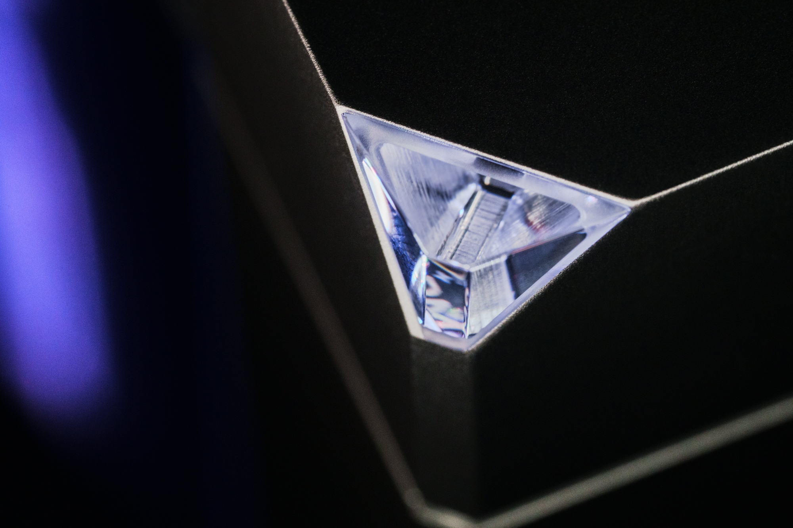
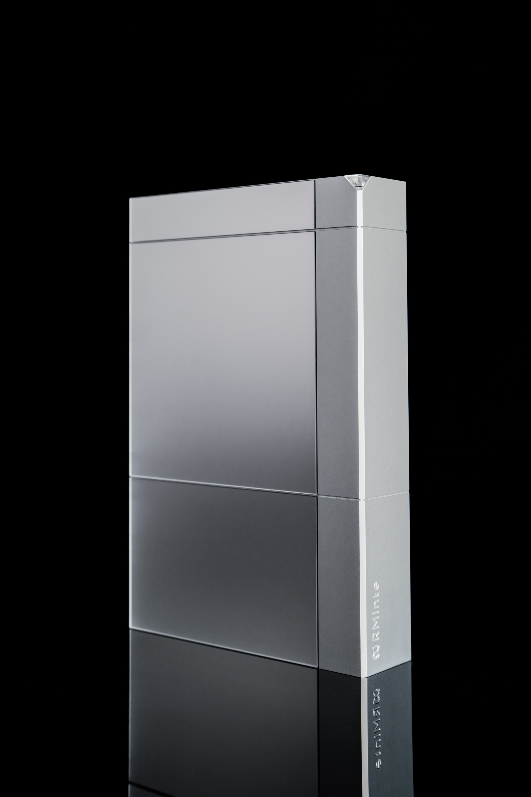
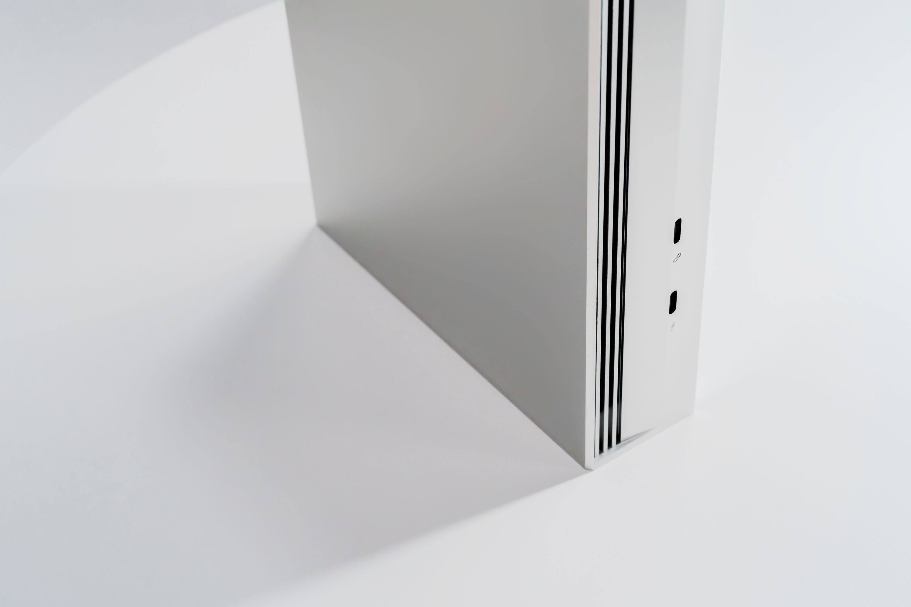
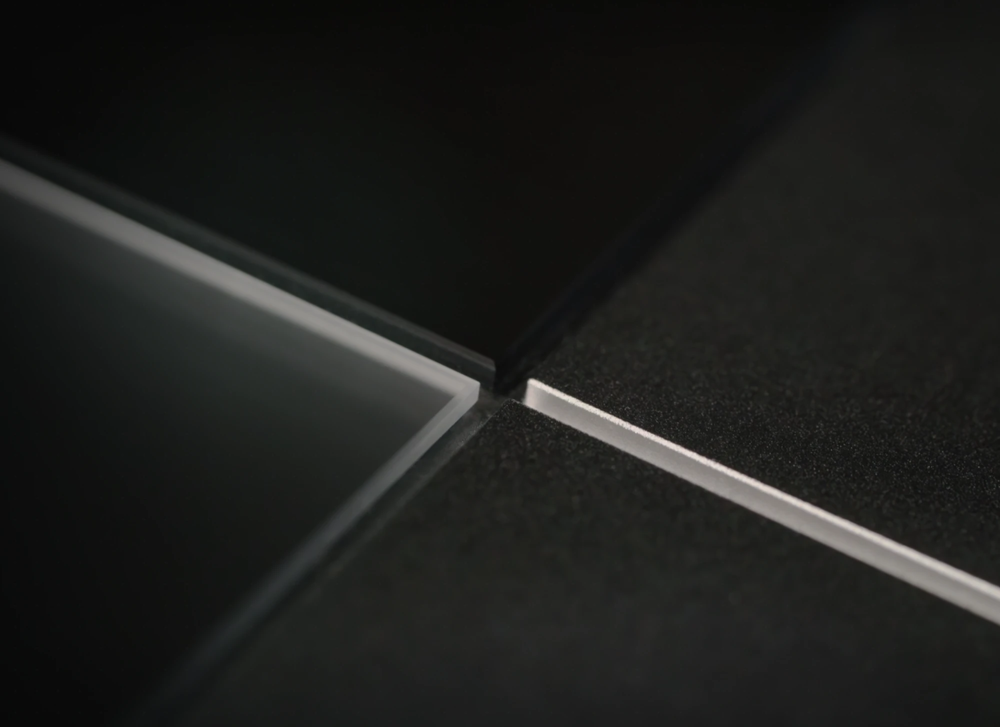
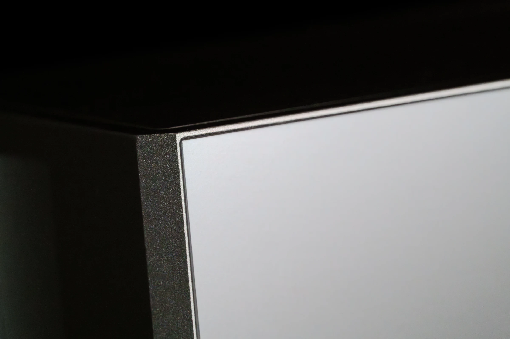

6063
铝合金机身
6063 铝合金构成机身，握持时的扎实感，来自材料本身。
推理引擎
自研推理引擎提高算力与显存利用率，减少资源消耗。更大模型、更长上下文与更多并发任务，由此获得运行空间。
整机协同
一台设备的运行，离不开内部各个部分的配合。TianshanOS 管理 RM-01 的内部设备与系统行为，让推理、应用与存储共同工作。无需专门建设供电、网络与机房环境，RM-01 就能走进业务现场。
硬件架构
应用有自己的运行空间，推理有专属的计算资源。RM-01 将模型、应用与运行环境整合进一台设备，让各个模组的协作，服务于你的业务。
深入内部
紧凑机身之内，推理、应用、互联与散热各有其位。随着结构展开，模组之间的连接逐一显现，一套本地 AI 系统的构成也随之清晰。

持续运行
推理持续，散热也持续。特制叶片、定制电机与 Z 型独立风道共同导出热量，支撑高并发任务。风道设计经过数次计算流体力学仿真优化；封闭式热管理结构大幅减少灰尘进入核心器件区域，照顾高负载下的运行，也照顾日复一日的使用。


材料与光
光掠过切面，蓝宝石的轮廓从深色机身上浮现。外覆合工艺让蓝宝石贴合机身表面，保留多重锐角切面。高硬度让成型与镜面抛光更为艰难，良品率也随之降低。56 小时的雕琢与抛光，凝结在这一刻的光泽里。

触感与表面
整面绒光肤感玻璃柔化光线，呈现温润触感。目光与指尖，都能感知 RM-01 的表面质感。

连接与访问
一个接口连接电源，一个接口连接网络。智能眼镜、电脑、路由器、手机与平板，都是访问本地 AI 的入口。你熟悉的设备，由此连接身边的算力。
方案交付
模型与应用存放在可更换的存储卡中。插入 RM-01，一套对应业务的本地 AI 方案随之装载。同一台设备，换一张卡，就能接手另一项工作。
制造精度

6063
6063 铝合金构成机身，握持时的扎实感，来自材料本身。

260 目
喷砂赋予金属细腻的表面。目光看见的纹理，指尖也能感知。

R0.2 mm
玻璃边缘采用 R0.2 mm 圆角，与铝合金机身精密贴合。两种材料在这里相接，也在这里体现装配的功夫。

＜0.03 mm
工艺公差小于 0.03 mm。精度落实在接缝与收口，让每一处衔接都经得起细看。
向下滚动，查看更多工艺